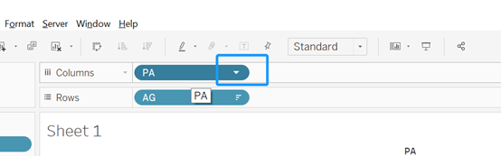
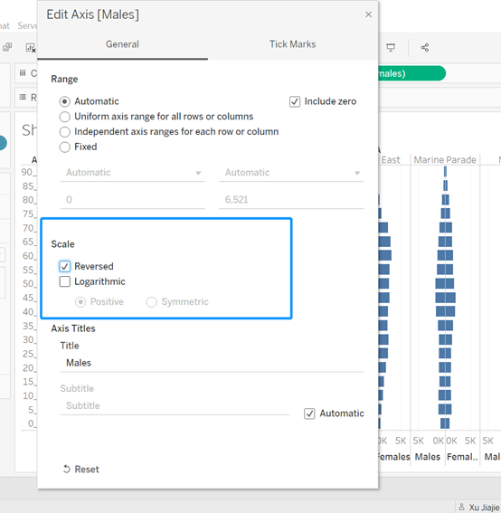

Take Home Exercise 1
Age-sex pyramid by planning area in SG
1. The task
The task is to use age-sex pyramids to reveal the demographic structure of SG at the planning area level, describe the step-by-step preparation, and interpret the observations revealed by the data visualization prepared.
The data source of visualization is Singapore Residents by Planning Area / Subzone, Age Group, Sex and Type of Dwelling, June 2022. The data are available under the page entitled Geographical distribution.
Here are some notes about the data:
PA - Planning Area
SZ – Subzone
AG - Age Group
Sex – Sex
TOD - Type of Dwelling
Pop - Resident Count
Time - Time / Period
2.Step-by-step preparation
This section details the steps required to produce the age-sex pyramids as described in section 1.
1)Load the respopagesextod2022.csv file into Tableau Desktop.
2)Click Sheet 1.
3)Because we want to build up the age-sex pyramid, so we need to drag AG in Rows.
4)Click the triangle of AG and then click Sort. Choose descending.
5) Drag PA to Column.
6) We only need to show nine planning area so we click the triangle of PA and then click Edit Filter. Choose nine planning areas that you want to show from the filter and then click OK. I will explain the chosen reason in the final part. I choose Ang Mo Kio, Bishan, Bukit Timah, Clementi, Jurong East, Marine Parade, Novena, Queenstown and Serangoon.



7)Because we need to show the difference between gender. We need to create new fields for males and females. Because if we drag sex directly to Columns, we can not get the correct result. So, click the triangle below the data source and then click Create Calculated Field…
8)Enter the name Females and the statement. Click OK.
9)Create one more calculate field. Enter the name Males and the statement. Click OK.
We can see Females and Males created successfully.
10)Drag Males and Females to Columns.
11) Click Entire View. Charts can fill the whole view.
12) Because we need to display the pyramid shape so we need to reverse one of the genders. So move the mouse to Males at the bottom and click the right-hand button of the mouse and choose Edit Axis.

13) Click Reverse.

It would show pyramids successfully.
14) We need to use small-multiple plots to display nine selected planning areas on a single view.
And here is the reference video that I learned: https://youtu.be/kWZoa3UfbVs.
Click create calculated field and name it as Index. Enter the statement and click OK.

15) Click the triangle of Index and then click convert to Discrete.
16) Because we don’t want to hard code the number of columns, we need to create the parameter. Click Create Parameter and named it n of Columns.
- Set the Data type as integer and the current value as 3. And then click OK.
- Create one more calculated field and Name it as Columns. Right click the Columns and convert it to discrete.
19) Create one more calculated field and Name it as Rows. Right click the Rows and convert it to discrete.
20) Drag Rows and Columns to Rows and Columns that are above the view.
21) Click compute Using ->PA in Columns and Rows .
22) Drag PA which is in the top of the view to Detail.
23) Change pyramids’ colour. Click SUM(Males)->Colour, SUM(Females)->Colour.
24) In order to show some text of numbers in the view, we need to drag Males to SUM(Males) Label. Drag Females to SUM(Females) Label.
25) We need to label the planning areas’ names at the top of each area. Right click the view and choose Annotate->Area. Enter the areas’ names.
26) Change the name of the view. Double click the sheet 1 and enter the name. 
27) Here is the final view:
3.The patterns reveal by the analytical visualization prepared
From the above visualization, there are several details that need to pay attention to. Firstly, I choose Ang Mo Kio, Bishan, Bukit Timah, Clementi, Jurong East, Marine Parade, Novena, Queenstown, and Serangoon. I choose Ang Mo Kio because here is my home address and Bishan is near my house. I want to explore the population pattern in these areas. Bukit Timah is a rich area that roused my curiosity. There are some elite schools in Clementi and that’s why I want to explore the population pyramid in this area. Property prices in Queenstown are high so I also want to visualize this area. The rest of the areas that I pick randomly because I’m a foreigner so I just choose some areas that I’m not familiar with.
In addition, from the above visualization view, we can find that Singapore has a relatively small population of children and teenagers, and a larger population in the 25-50 age range. In the group over 90, there are always more women than men. This also reveals several problems: Singapore has a low birth rate and will have a serious aging population in the future. There may not be enough working-age people in the future to support the economy and the growing dependent population. Women have longer life spans.
For Ang Mo Kio, there are a lot of people living in this area. Maybe there’s a bigger residential area here. For Bukit Timah, The largest group is aged 40 to 50. I guess maybe this is a rich area, the house is relatively expensive, and you need to have certain savings to buy, so the residents are older. For Queenstown, 25 to 55-year-olds make up the bulk of the population.
In conclusion, the age-sex pyramids reveal several problems: Females have a longer life than males in SG. Singapore has a low birth rate and will have a serious aging population in the future. There may not be enough working-age people in the future to support the economy and the growing dependent population. The population pyramid for each planned area will be slightly different depending on the characteristics of each planned area.